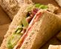

INGREDIENTS: Malted Bread (Wheat Flour ( Wheat Flour, Calcium Carbonate, Folic Acid, Iron, Niacin, Thiamin), Water, Malted Wheat Flakes, Wheat Bran, Malted Barley Flour, Yeast, Salt, Wheat Gluten, Emulsifiers: Mono- and Diglycerides of Fatty Acids, Mono- and Diacetyl Tartaric Acid Esters of Mono- and Diglycerides of Fatty Acids; Malted Wheat Flour, Rapeseed Oil, Flour Treatment Agent: Ascorbic Acid; Wheat Flour, Wheat Starch), Tomatoes (17%), Beechwood Smoked Streaky Bacon (16%) (Pork Belly, Sugar, Salt, Antioxidant: Sodium Ascorbate; Preservative: Sodium Nitrite), Lettuce (8%), Water, Rapeseed Oil, Cornflour, Spirit Vinegar, Pasteurised Egg Yolk, Concentrated Lemon Juice, Sugar, White Wine Vinegar, Salt, Mustard Seed.